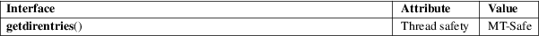

getdirentries − get directory entries in a filesystem-independent format
Standard C library (libc, −lc)
#include <dirent.h>
ssize_t
getdirentries(int fd, char
buf[restrict .nbytes], size_t
nbytes,
off_t *restrict basep);
Feature Test Macro Requirements for glibc (see feature_test_macros(7)):
getdirentries():
Since glibc 2.19:
_DEFAULT_SOURCE
glibc 2.19 and earlier:
_BSD_SOURCE || _SVID_SOURCE
Read directory entries from the directory specified by fd into buf. At most nbytes are read. Reading starts at offset *basep, and *basep is updated with the new position after reading.
getdirentries() returns the number of bytes read or zero when at the end of the directory. If an error occurs, −1 is returned, and errno is set to indicate the error.
See the Linux library source code for details.
For an explanation of the terms used in this section, see attributes(7).

BSD.
Use opendir(3) and readdir(3) instead.
lseek(2), open(2)